- 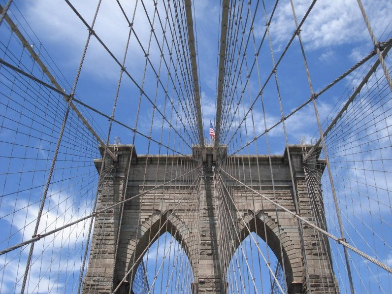
Towards the end of finishing my degree at UCSD, I stood at the precipice of adventure. in a month's time after graduation, I was to hop on a flight to Europe, somewhere I had always dreamed of going, yet prior plans had always fallen to the wayside. It was a journey on which I would give, recieve, and experience much. I was challenged and found myself in times of much personal reflection, learning and growth; as well as fun. The primary mission at hand was to go to rural western Ukraine, where I was given the opportunity to volunteer with an organization called Lifenets by helping teach English to and spend quality time with disadvantaged children at a day camp there in Виноградів(Vinohradiv) Ukraine. The camp was to take about 2 weeks time, and after which, I had a month until I had to be in British Columbia, Canada to fulfill the honor of being my friend's best man at his and his then fiance's wedding. So, during the early stages of planning for this trip, I was swamped with a ridiculous ammount of work from and an over-full class load, an internship, and working in the music dept. at the auditorium on campus where I was a stage tech. At the point I had to purchase my flights, being too busy to plan anything out at all, yet knowing of this time gap between camp and wedding, I decided that since I was already out there, I better take advantage of this opportunity to see much more of Europe. So I booked my flights and hostels pretty solid in the half-week before the camp so I wouldn't risk being late or delaying anything. This included a 12-hour layover in Geneva, Swizerland, a couple days in Berlin, Germany, and then a day in Budapest, Hungary where it was planned all of us volunteers at this camp would meet and then take a train into Ukraine; however, I decided to throw caution to the wind and "figure it out later" and booked my flight to Canada departing out of Madrid, Spain. Somehow after the camp was done in western Ukraine, I would make my way to Madrid in a month's time.

So the day had finally arrived. Packed and ready to go, the adventure began. I chose my external frame backpack, as I had recently aquired it off ebay and wanted to break it in. Plus it was kinda neat to have an older style pack which stood out among the usual packs of other travelers. Kinda hipster I guess, but I like that pack, haters gonna hate. After taking off from San Francisco, my first stop was in New York for a night and most of the next day. I flew into La Guardia and took the bus into Harlem, where I then took a southward bus into Manhattan to meet up with my friend Ariel, who was way nice and had a couch on which I was able to crash for the night. But before crashing, we decided to go out and have some fun exploring a bit of Manhattan. I actually needed to pick up an IPod touch, and as it was getting late (11pm), I asked Ariel if there were any 24 hour Apple stores in Manhattan, and she answered me with a look of surprise, as if there were any question. it IS New York City afterall.
The next day, with my flight to Swizerland in the evening, we wandered around for a good bit exploring the city. Bagels, Central Park wandering, Battery park, the Brooklyn bridge (pictured right) and a few other places later, it was time to make my way via subway and air train to JFK intl.
 where my Swiss Airlines flight would take me to Geneva, Swizerland for a 12 hour layover. I planned such a layover because there wasn't avoiding a layover for the price I got my tickets,
and this way I would arrive in Geneva at 9am and depart at 8:45pm, giving
me ample daylight time to explore the city some. Passport, Bording passes, and late night Ipod in hand, I sat and waiting for my flight to Geneva.
The flight departed at around 6pm, and I had a rather squished flight on the way over. I was in coach of course, and I was in the middle section in one of the two middle seats with a very large man on my right. It was kinda rough, but
my excitement kept me going.
where my Swiss Airlines flight would take me to Geneva, Swizerland for a 12 hour layover. I planned such a layover because there wasn't avoiding a layover for the price I got my tickets,
and this way I would arrive in Geneva at 9am and depart at 8:45pm, giving
me ample daylight time to explore the city some. Passport, Bording passes, and late night Ipod in hand, I sat and waiting for my flight to Geneva.
The flight departed at around 6pm, and I had a rather squished flight on the way over. I was in coach of course, and I was in the middle section in one of the two middle seats with a very large man on my right. It was kinda rough, but
my excitement kept me going.
- 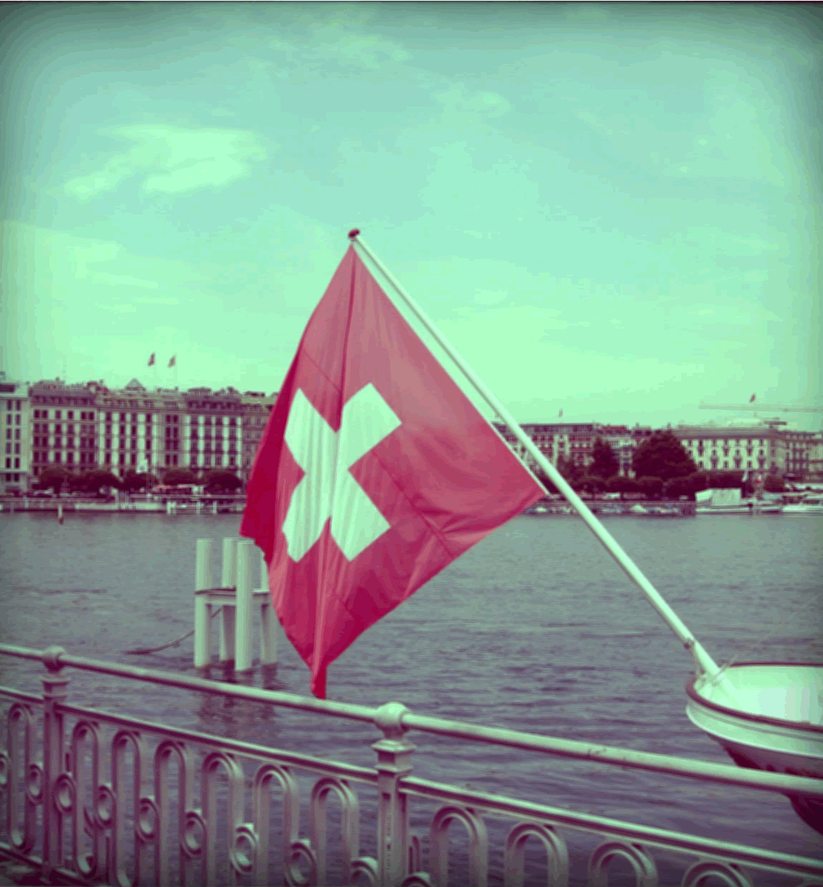
Suisse
I had landed and managed to make my way from the airport to the center of Geneva. This is the first time in Europe, and even though I was quite tired from the trip, I didn't feel it much from the excitement of exploring a forreal European city for the first time. I found myself to be a little disoriented at first, so I fired up my handheld outdoors GPS onto which I hacked google maps before the trip. At this stage in the trip, things felt a little bit more nervous from the incredible ammount of new and unfamiliar. Like if I weren't at a train station with an hour before departure, have exactly the next day planned in my mind, and was generally unsure of what was going on, I would get a little uneasy but still generally easy going. Not stressed, just not totally having reached backpacker nirvana as I did toward the end of the trip.
So, I found my bearings, and I soon found a nice park bench on the other side of Lac Leman (the name of the big lake there), and I sat there for a bit just taking it in. In curiosity, I whipped out the IPod, and lo and behold there was internet. So I tinkered with that for a bit, sending emails back home and whatnot. I then wandered around for a bit in a sort of dream state of not fully quite grasping that I was really in Europe. I thought perhaps this was a sign that I was really too tired for health and should find a nice bench somewhere and take a nap. So I did. I later found what had become my favorite fountain in the world. I had my small day pack and water bottle which I was lucky to have decided to take with me for the day, but I soon had drank all the water and was getting pretty thirsty. Rather than blow 5 Swiss Francs (something like 6 bucks) on a small bottle of water, I went up to a suspicious jet of water coming out of some rock above which was a small plaque on which was some kind of perculiar scribbling. Aha! French! It said "Eau Potable", and based on my very
rudimentary ability French, and the fact that Swizerland didn't strike me as a third world country where the water would be assumed to be quite sketchy, as well as being so thirsty,
I took a bold step and decided I to drink the water. I wandered more around the city taking breaks here and there to sit and try to compute what I was experiencing and what more was coming my way.
My short time in Swizerland was coming to a close, and so I headed back to the airport. while waiting for my
flight to Berlin, I tried to take a nap on some of the hardest, most horridly uncomfortable seat/bench things I've ever come across. I imagine they were so purposely designed to
prevent what I was trying to accomplish, yet I actually did manage to get some quick sleep. I took off from Geneva on a Lufthansa airlines flight to Berlin, and it seemed that I must look the part of a German,
so the flight attendants asked me for my
food option and whatnot in German and didn't seem to notice or care about my accent or maybe lack thereof even though immediately using english with other people in front of me. Then the guy next to me started talking with me in German. We
carried conversation for a bit until I realized that his accent, while not bad, wasn't German. So I asked where he was from. Turns out he was from Hawaii and so we just continiued on in
English. During this flight, the pilot kept us all updated on the current Italy vs. Germany semifinal match of the European soccer cup which was currently happening in Ukraine.
Aha! French! It said "Eau Potable", and based on my very
rudimentary ability French, and the fact that Swizerland didn't strike me as a third world country where the water would be assumed to be quite sketchy, as well as being so thirsty,
I took a bold step and decided I to drink the water. I wandered more around the city taking breaks here and there to sit and try to compute what I was experiencing and what more was coming my way.
My short time in Swizerland was coming to a close, and so I headed back to the airport. while waiting for my
flight to Berlin, I tried to take a nap on some of the hardest, most horridly uncomfortable seat/bench things I've ever come across. I imagine they were so purposely designed to
prevent what I was trying to accomplish, yet I actually did manage to get some quick sleep. I took off from Geneva on a Lufthansa airlines flight to Berlin, and it seemed that I must look the part of a German,
so the flight attendants asked me for my
food option and whatnot in German and didn't seem to notice or care about my accent or maybe lack thereof even though immediately using english with other people in front of me. Then the guy next to me started talking with me in German. We
carried conversation for a bit until I realized that his accent, while not bad, wasn't German. So I asked where he was from. Turns out he was from Hawaii and so we just continiued on in
English. During this flight, the pilot kept us all updated on the current Italy vs. Germany semifinal match of the European soccer cup which was currently happening in Ukraine.
< Back to intro
to Germany >
- 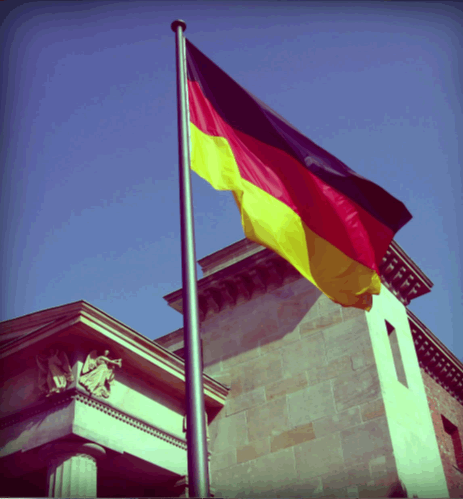
Deutschland!!
This is what I was hearing chanted by many a drunken soccer fan when I was on the streets of Berlin in search of my hostel. I had landed right at sunset, and I had a pretty sweet view of Berlin on the way into Tiegel airport in the north of the city. I managed to pull some cash out of the ATM (ugh.. Euros...), and I got on the TXL bus towards Alexanderplatz.(not before helping some Aussies select English on the ticket machine). The bus meandered through the streets for a time until we got close to Hochbahnhof station (The main station still north of Alexanderplatz), but we soon came to a stop. Traffic. There was epic congestion, and after some sitting around for a bit, the bus driver mumbled something incomprehensible to me, but also apparently to the locals, so I didn't feel too bad in not understanding, and just disappeared for about 15 minutes. He later retured and more coherently told us that the soccer celebration at the brandenburg gate had spilled out into the streets and was jamming everything up and that we would have to find alternate
transportation via U-Bahn. I went into the Hochbahnhof station, but figured my hostel wasn't too far away really, so I decided to walk. About 30 minutes later, I finally arrived
at the hostel at about 1am
despite the drunken party going on in the streets which included some guy standing in the middle of traffic with his pants down while his friends laughed histarically. All this
excitement, and as it turns
out, the Germans lost the game, sending Italy to the finals and dear Deutschland to battle for third place. It was time for a good night's sleep, and lucky for me, despite it being
around 11am or 2pm or
something horrid like that back home, I hit the pillow and was out like a rock. So far my Europe adventure was pretty fun, and I was excited for tomorrow.
out into the streets and was jamming everything up and that we would have to find alternate
transportation via U-Bahn. I went into the Hochbahnhof station, but figured my hostel wasn't too far away really, so I decided to walk. About 30 minutes later, I finally arrived
at the hostel at about 1am
despite the drunken party going on in the streets which included some guy standing in the middle of traffic with his pants down while his friends laughed histarically. All this
excitement, and as it turns
out, the Germans lost the game, sending Italy to the finals and dear Deutschland to battle for third place. It was time for a good night's sleep, and lucky for me, despite it being
around 11am or 2pm or
something horrid like that back home, I hit the pillow and was out like a rock. So far my Europe adventure was pretty fun, and I was excited for tomorrow.
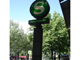 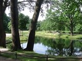 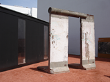 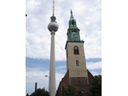
Indeed it was exciting. I woke up and spent the few euros for the hostel breakfast. It was a buffet thing, so I got filled up with some pretty good stuff. I then made my way over to the Brandenburg gate, Tier Garten, and other assorted central things. The Bundestag is in the picture above, and to the left is some graffiti I saw that seemed to be the first taste I got in the
wild of how Germans feel about the whole recent Eurozone money issues thing. The graffiti translates to: from left to right: "We now have a mixture of Drachme and Euro" --
"The Euro is not a Teuro" - (Teuro being a play on words between euro and the German word for expensive, I believe) -- "also we live on credit" -- "Greed is Good" (or something
to that effect). The next day in the afternoon I made my way back to Alexanderplatz, just a short walk from the hostel, and took the train to the airport in the south of Berlin
(Flughafen Schönefeld). I was off to Budapest, Hungary where I would have an afternoon and the next day to myself until finally meeting up with the others in the Lifenets crew.
and to the left is some graffiti I saw that seemed to be the first taste I got in the
wild of how Germans feel about the whole recent Eurozone money issues thing. The graffiti translates to: from left to right: "We now have a mixture of Drachme and Euro" --
"The Euro is not a Teuro" - (Teuro being a play on words between euro and the German word for expensive, I believe) -- "also we live on credit" -- "Greed is Good" (or something
to that effect). The next day in the afternoon I made my way back to Alexanderplatz, just a short walk from the hostel, and took the train to the airport in the south of Berlin
(Flughafen Schönefeld). I was off to Budapest, Hungary where I would have an afternoon and the next day to myself until finally meeting up with the others in the Lifenets crew.
< Back to Swizerland
to Hungary >
So far, much of what I saw on the trip was a mix of things I was expecting to see and things of which I didn't know the identity, yet looked impressive. I would say,
"oh, there's a thing!" and take a picture of it. The thing that immediately impressed me about Budapest was the tremendous amount of these "things" I encountered. Even as
I emerged from the subway from the airport, and for the first time saw the city, I was shocked at how many "things" there were. Everything was so old and big and cool lookin'.
I then found the hostel I had booked when in Berlin and settled in a bit. After cooling off in the hostel from the high heat and humidity outside, I decided to wander around a bit.
I walked west and crossed the danube. I then decided to walk up to the top of a hill I saw across the bridge. The view at the top of the hill was incredible, which you can see to the
right.
I then walked north along the Danube and spotted the Hungarian Parliament building, which then I crossed another bridge to get to it.
After wandering around until a bit after sunset,
which set around 10pm here at the time, I went back to the hostel and turned in for the night. The next day,
I went to another hotel, yup, hotel, not hostel, and eventually met the others in the LifeNets Ukraine crew. Oleh, Natasha, Lauren, and Colin Kubik after they arrived from flying in that day.
It turned out that the airline had misplaced Natasha's bags, and after a few hours of worry, they finally showed up over night. They were all jet lagged and ready for naps, while I had already made the adjustment; however,
Colin was a boss and wanted to wander around a bit. Later in the evening we all got something to eat and then went north in the city and found a big screen on which the Euro Cup final soccer match was being shown between
Italy and Spain. There was a whole heap of people there with all eyes glued to the screen.
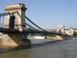
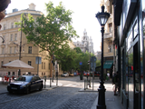
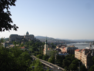
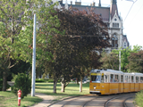
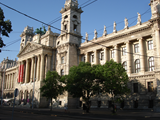
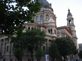
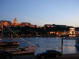
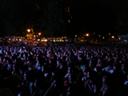
Waking early the next day, the LifeNets crew and I headed to the train depot via the Budapest metro; not without humorous difficulty trying to understand the announcements for the correct stop in Hungarian. Alas, we arrived at the correct train depot at the correct time, yet it wasn't immediately clear which was the correct train. After wandering around wondering, we eventually found someone who was able to confirm that the train we had thought was the correct train, was indeed the correct train. So we headed off for the border crossing towns of Zahony, Hungary and Чоп, Україна (Chop, Ukraine).
< Back to Germany
to Ukraine >
The LifeNets crew and I arrived in Чоп, Україна (Chop, Ukraine).
When we were waiting in the immigration line to get into Ukraine officially, Oleh made a point of going ahead first, since he is fluent in Ukrainian and wanted to best explain who we were.
I was last through the line, and by the time I was stamped through, the last 3 of us were just waved on by, while Natasha and Oleh got their bags checked. Other people around us being checked
were getting their bags turned inside out with searching due to Ukraine being a main thoroughfare for drugs coming from Asia into the European Union much like Mexico is to the United States, as I had explained to me.
So being a small enough town, people knew the story, and once the customs guys got word of who we were; that group of Americans coming to help that orphanage in town, we got waved right on through.
Once outside, were met by the people who run the orphanage and camp at which we were to volunteer for two weeks.
we made our greetings and were whisked away in the van LifeNets had donated to this group years ago.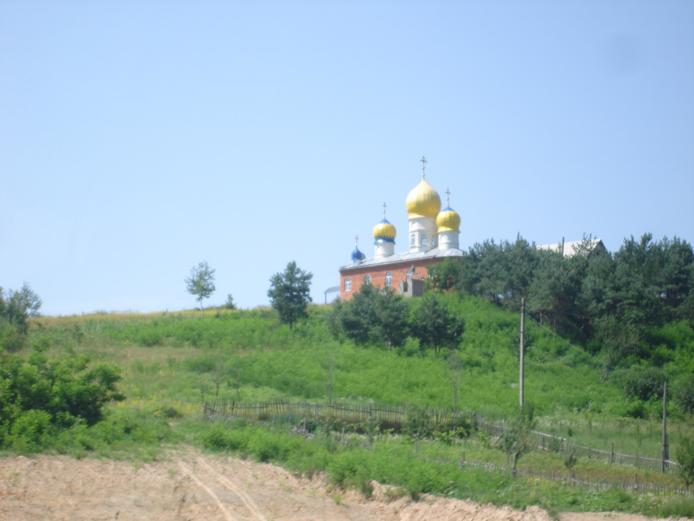 At this point in the game, I had only fiddled with a Ukrainian phrasebook app on my iPod, and I was
by that point familiar with the alphabetic differences between Russian and Ukrainian, knew a few phrases and words of Ukrainian as well, but that was about it, and Ukrainian really just sounded
like Russian, but different somehow, yet I should still be able to understand, but at first I understood only maybe 15% of what was going on. These folks, and many of the young kids, did speak Russian
quite well, but their Ukrainian was even of a local dialect and I was told is often slightly confusing to Ukrainian speakers from other parts of the country. Luckily I was able to get by quite well when
Russian was being used, and it helped heaps in getting to know and relate with the kids and adults around me.
A typical day here consisted of leaving the orphanage house early in the morning and heading over to the mission, where the camp was held, and having a big breakfast together.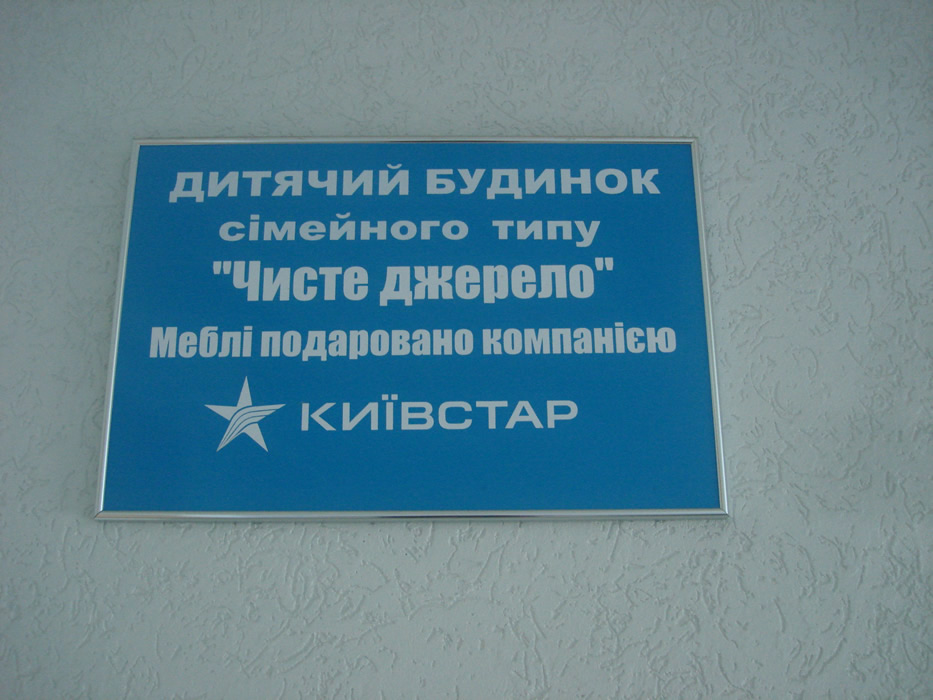sign that I was really too tired for health and should find a nice bench somewhere and take a nap. So I did. I later
after this, we would have about 45 min to an hour of play time and then be called in for урок (lessons) and the first class would begin. Our goal here was to teach basic English to these disadvantaged
children, the most basic to the youngest, yet provide some more challenging things for the older kids. The first lesson was for the entire group, we would start by memorizing something in English with which they
had quite a lot of familiarity in Ukrainian, the Lord's prayer. We also taught the group English childrens' songs and went through the lyrics as well. After this lesson, we had a 45 min recess during which volleyball was
a common activity. It was a lot of fun listening to the banter and using it to tune up to Ukrainian, especially numbers as they called the score at every serve. After this recess, we would break into groups for about another hour and a half or so
to be able to give different groups of kids more focused attention with English learning, even though much of the time the kids were learning a lot during play time. Since I was able to speak Russian
and handle a few phrases in Ukrainian, I was constantly being asked how to say something in English, whether it was a girl running up asking "how to I say to Natasha that her hair is pretty" or an older guy
playing chess and asking what name of the game was called in English or any other random questions he/she wanted to know. As our time there progressed, the questions they would ask would even get more high-level and
start to get into grammar and verbs etc.
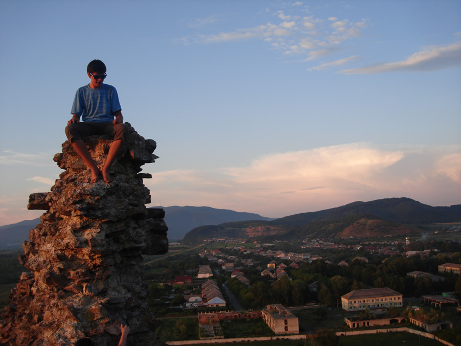
Our typical day would then proceed into having Lunch all together, followed by a Bible study. We then would
ajourn for some more play time before we would go on an afternoon excursion. The picture to the right shows Joseph up on top of some old ruins we went to on one excursion. It was insane to think about it when I learned
that these ruins were once a fortress which was knocked over by the Mongols. The Mongols... the folks I've, until now, had only read about roaving the countryside of what may as well be a foreign planet in history books, and here
something was that they left behind that we, a bunch of kids, were climbing and jumping around all over. Now, this week in Vinohradiv was extremely hot and humid, so all but two of our excursions were to the Tisa river where we would jump in the water from
a small ledge and swing from a rope tied to the tree. We would then come back from dinner and play a bit until sundown. A lot of my time during playtime was spent playing volleyball and pushing kids on the swing, and I quickly
became the swing guy, as I was able to push kids for long periods of time and pretty high within reason as well.
Our time with the kids at the camp had drawn to a close and a great time was had by all. Oleh, Lauren, Colin and Natasha
were off to somewhere west of Kiev to see family who still live in Ukraine, and their bus route went through L'viv, so without much forethought, I decided to tag along and part ways in L'viv. The ride
over the Carpathian mountains was absolutely gorgeous and quite exciting as well as the bus drivers there tend to go fast. Once we made it to L'viv, we all got off for a break and I got my backpack from under the bus, as this was
my port of departure with the LifeNets crew. We said our goodbyes and I walked away as the bus pulled out of the station. Right then it hit me.. wowa, okay. I am alone now. In L'viv Ukraine of all places. Well, I have a month
to get to Madrid, sooooo let's go, I guess. I went over to grab a cab down to the hostel which I had booked a couple nights before leaving Vinohradiv. I didn't bother negotiating the cabbie down much, as his first offer of 50 Ukrainian Hrivny for
a 30+ minute cab ride, being like 6 bucks, was a steal in my book coming from the USA.
I found my hostel in the center of L'viv, all of which is a UNESCO world heritage site because it is just about the only medieval square that was never bombed into oblivion by either of the world wars
Here I saw many cool things, the first day I went up to the високий замок (High Castle) and got a sweet view of the city.
I then just wandered around the city, making not of different things on the map I felt interesting enough to walk to, and sometimes I would purposely get lost a bit just to be able to wander around and see all the foreign things.
In all my walking around, I must have looked the part of a local or something, as my camera wasn't obvious and I always looked like I was on the move I guess, because twice I was stopped by a passerby and asked for directions in Ukrainian which promptly
switched to Russian and only one person was I able to direct in any direction, as alas, I was not a local.
One day, upon returning to the hostel in the evening, I met a friendly couple who were staying there as well. A guy from Wales and a gal from the Netherlands. Between them they spoke 3 languages, English, Welsh, and Dutch; however, that doesn't
get you very far in Ukraine, as not many people speak English, and practically nobody speaks Dutch or Welsh, I'd imagine. They told me how they were just wanting to get to Kiev and that they would go up to the departure board and just
see a buncha times and squiggly things, being the cyrillic alphabet, and upon going up to a window asking "a train ticket to Kiev, please" anyone could only apparently reply "no trehn... no trehn zer". All
this was frustraiting for them, as of course there had to be a train to Kiev, but alas, no luck. They then asked me if I would go with them the next day and help them out. Upon asking the ticket clerk for a ticket to Kiev, she explained how they were
booked solid for the next 3 days because of the European Soccer Cup championship which recently took place in Ukraine and Poland, but she explained how if they catch a train to Warsaw, Poland and then back over to another city, it would get them to Kiev
within a day. They then decided to try the bus option and I asked her directions to the bus ticket station, and so we went, hung out for a bit, and went our ways.
Another time at this hostel, I ran into a guy from Madrid named Xavi. We chilled a bit and didn't mention where each other was going or anything, but coincidence has a funny way of happening, more on that later.
So the time came for me to move on toward Madrid, Spain. Hmmm what country is next to Ukraine, I thought. Poland, Okay, I'll go to Poland. So to Poland I went the next morning after getting my train ticket.

< Back to Hungary
to Poland >

Heading over the boarder into Poland, and thus the E.U. was an interesting experience, as
the border stop would entail about 2 and a half hours of waiting. Not for the immigration checks alone, but to change the wheels on the train. Yup, as weird as that sounds, that's exactly what happened.
The train would stop the first time once in Poland, and the boarder guards would get on with their camo, german shepherds, and automatic rifles. Even the dressed up passport stamp ladies in heels and skirts
had a .45 or something similar strapped to their hips. After this and another fresh stamp in the passport, the train actually backed up and switch tracks a bit, after coming to a stop with these hydroulic arm things
all along both sides of the train, a guy busted in and asked myself and a couple others in the room to move out of the way in order to access what is basically the train wheels come off crank or button or something.
so once he did that, those hydroulic arms extended under the sides of the train and slowly lifted it from the tracks leaving the old wheels behind. Those wheels were moved away and a new set were rolled in which had temporary wheels
that would later go away from the new set after getting off the Russian guage track. This is all due to that the Russian guages of railway are wider than the standard European guage of track presumably to be better for
carrying heavy tracks and to prevent trains from the west coming into Russian controled zones and vice versa without needing 2-3 hours of heavy work and a stationary train which kept it a captive audience
for ample checking in order to do so. This was just simply nuts. I had my suspicions, and hope, if this happening when getting on the train in Ukraine, but it was only ever a vague thought of 'maybe' from having
heard it mentioned in a film and a book or two, making it seem only an archaic description of how things were done in 'the old days'. Sure enough, here it was.
I was already really impressed with how pretty Poland was.
My impression from history books of how it was a flat area between Germany and Russia (as well as France) which made it so conducive to be trampled over as those folks fought with each other.
Yet this impression was clearly incorrect, my idea of it being akin to the I-80 corridor of Wyoming couldn't have been further from reality. Small hilltop vilages amidst the green rolling hills and open land was
inspiring as it was beautiful from my middle-berth sleeper-train window.
I arrived in Krakow and made my way to the hostel I had booked using my iPod back one evening in L'viv. I wandered the city a bit, and looked for cool sounding things I saw on the map. The Tour de Pologne (Tour of Poland)
bike race was in town, and it was exciting to see parts of the race while I roamed about. The weather was turning into thunderstorms, but it looked really cool over the river, but on my way back to the hostel it started
pouring like the dickens, and I got pretty soaked. Alas, all was quite well in the world as far as I was concerned.
The next morning I woke up and made my way to the free hostel breakfast which normally consisted of
a few slices of toast and cheese. On my way over, I heard someone say, "Greg...?" It was Xavi, the guy from Madrid who I met while in L'viv. We chatted a bit in our surprise of seeing each other, and we
found out that we had been planning to go see the same thing this day. Auschwitz. We decided to go see it together, but he mentioned that the evening before, he met two guys who were also from Madrid, and that
we could go over to their hostel and meet up with them 'cause they wanted to go as well. We all met up at their hostel where the other guys were finishing up breakfast. During this time, Xavi was asking me questions about
what words meant what in English. On one occasion he asked me a word, and I began to spell it using Spanish letters. I forget the word but it involved the letter "c" which in Castillian Spanish is pronounced with the lisp.
It's not the old tale of the king having a lisp and everyone scared not to copy him, the letters C and Z in Castillian Spanish are just pronounced that way, and the S is still a voiceless alveolar fricative, aka. normal non-lispy "S".
Anyway.. I was spelling whatever word it was, for example, "a" "b" "c" but pronounced c like a Latin American Spanish speaker would as "se" and he looked at me all confused for a second.. and said, "ooooohh theh"
because to him c/"se" sounds like the word "se" meaning I know (a, b, I know). Took me a while to get used to their lisping. OH but the coincidences didn't stop there. While still in that hostel, I started talking
to a girl over on a computer when one of the guys asked where I went to school in the states. Upon saying the University of California San diego, she said, "wait, I went there too and just graduated.." to which I replied
"which college were you in?" she says "ERC", which was the same one I was in. So, here I was, already one crazy coincidence in Poland of all places, and this girl was in the same commencement ceremony as I was.
 Anyway again, so we set off to see Auschwitz. It's about an hour train ride west from Krakow, and upon arriving, we had quite the experence. The first part of the concentration camp Auschwitz-Birkenau is referred to as Auschwitz-1.
This place was creepy and made quite an impression of course, it was a very very bad place, but something about it somehow just still didn't seem quite like what one sees in films and history books about
the place. The clarity came once we arrived at the Birkenau concentration camp. The, "what in the actual !#@%in' world...?" moment of shock came when arriving at this place. This is the huge one from the books and films, this place is
just absurd and monsterous, that
place was intense.. I managed to snap a fairly eerie picture on the way back to the bus that went to the train station. Heading back, with it having been raining off and on that day, and the view of the this place in the foreground,
the clouds were breaking and a vivid almost double rainbow streached over the place. Draw what allusion you will; it left an impression.
Anyway again, so we set off to see Auschwitz. It's about an hour train ride west from Krakow, and upon arriving, we had quite the experence. The first part of the concentration camp Auschwitz-Birkenau is referred to as Auschwitz-1.
This place was creepy and made quite an impression of course, it was a very very bad place, but something about it somehow just still didn't seem quite like what one sees in films and history books about
the place. The clarity came once we arrived at the Birkenau concentration camp. The, "what in the actual !#@%in' world...?" moment of shock came when arriving at this place. This is the huge one from the books and films, this place is
just absurd and monsterous, that
place was intense.. I managed to snap a fairly eerie picture on the way back to the bus that went to the train station. Heading back, with it having been raining off and on that day, and the view of the this place in the foreground,
the clouds were breaking and a vivid almost double rainbow streached over the place. Draw what allusion you will; it left an impression.
That night, the four of us decided to reflect a bit, but also then to unwind from the experience, let's just say we went out to a few bars and had a few beers. They were the chill hangout type, not rowdy clubbin guys, so it fit my
quite well and we had ourselves a good time until about 4:30 am when we headed back, still quite lucid, mind you. Xavi was going to hang back for another day and fly back to Madrid, but the other guys were planning on going on in the morning. I did not catch where
they were planning to go, but joking with them, I said that they would never make it and would miss their train. Thus we parted ways, and in the morning, I decided it was again time to move along on the journey.
I left my stuff at the hostel, and headed out to the train station to see where I would go next. After grabbing a starbucks, I browsed the departure boards deciding between Prague or Bratislava, Slovakia.  Just then, The guys from Madrid minus Xavi
spotted me and walked up. They missed their train by ten minutes, but no problem, the tickets, without seat reservations, are generally valid anytime within a year for that trip. They then asked if I wanted to go with them to Bratislava to which I said, yeah, why not?
They told me how strange it seemed how I was just standing there in shorts sipping a coffee going "hmmm where will I go next..." one saying that I seemed to have "el alma libre" (the free spirit). So then I bought the ticket, and went off to grab my stuff, met back up with the guys,
and we were off to Bratislava, Slovakia.
Just then, The guys from Madrid minus Xavi
spotted me and walked up. They missed their train by ten minutes, but no problem, the tickets, without seat reservations, are generally valid anytime within a year for that trip. They then asked if I wanted to go with them to Bratislava to which I said, yeah, why not?
They told me how strange it seemed how I was just standing there in shorts sipping a coffee going "hmmm where will I go next..." one saying that I seemed to have "el alma libre" (the free spirit). So then I bought the ticket, and went off to grab my stuff, met back up with the guys,
and we were off to Bratislava, Slovakia.
< Ukraine
to Slovakia >
The guys from Madrid, Pedro and Marco, and I arrived in the early evening in Bratislava, Slovakia. Not without some adventure and near mishap. The train out of Poland
was running late after having to stand on the tracks for 25 minutes, and we were to switch trains in Bruno, Czech Republic to get to Bratislava. We were watching the time as
the train got closer to that transfer point, since things were looking more and more like we were going to miss it. Based on what little Czech/Slovakian I could make out,
I could tell that they were quite unapologetically stating that we were running late over the intercom, yet this was a Vienna bound train, and I noticed the closer we got to our transfer station, and ergo Vienna,
the more the intercom guys spoke German and the more apologetic the announcements became despite making up quite a bit of time. So we got to the transfer station, with no time to spare and there wa a train across the platform.
We decided to chance it and just run for it, one guy saying "is this even our train?" as we ran onto it. I was the last one in and was able to glance quickly at the side of the train just before running on and the doors immediately closing behind me. I noticed the "575" on the side.
It was the right train. Good then.
We made our way to the hostel by foot, as it wasn't far and there was still some light out, we settled in a bit, and then we went wandering about Bratislava for the evening.
The next day was a bunch more wandering around the city, really not a whole ton to see here compared to other places, but nice nonetheless. Being close to Vienna, small coffee shops with great pastries weren't hard to find, so of course
I had an opportunity to snap the obligitory 'anywhere within 100 miles of Vienna' small, european coffee picture. The coffee and the chocolate croissant did not disappoint, as well as the price, just a euro for each of these things. Even though Slovakia has it's own currency apart from the Euro still,
Bratislava runs heavily on the Euro since Vienna is so close. Bratislava and Vienna are the two closest capitol cities in the world as it turns out. So I was able to hit up an ATM and feel the sting of Euros sucking my bank account dry way more quickly
than anything ever did in non-eurozone countries.
This was a surprise for me actually, that many countries in Europe which are in the European Union are still on their own currencies. Prior to this trip, I had thought that if a country was in the EU, they are probably on the Euro as well, right?
Nope. All the EU-nation currencies, the Swiss Francs (Swizerland not even being in the EU actually), Hungarian Forints, Polish złoty, Czech Koruna and Slovakian Koruna accumulated in my backpack thusfar taught me otherwise.
So it came time for me and the guys to part ways. There were vague rumblings of maybe meeting up when they make it back to Spain since I mentioned going there, but besides Xavi who we left back in Poland,
these guys were going to be still traveling by that time down in the Balkans after going to Budapest where I had already been. So I decided the next logical place to go was Vienna, since it was so close and an alluring prospect.
We headed to the train station together and purchased our tickets. My train left about 30 min before theirs did, so I was the first to go.
< Back to Poland
to Austria >
I took the train over from Bratislava and arrived in Wien (Vienna) at Sudbahnhof station, as there are two major train depots going through Vienna. Sudbahnhof and Westbahnhof.
I was then in search of my hostel. I got a 3 day vienna transit pass thing from the kiosk which was good on and of the underground, busses, and trams in the city. I had to make a bunch of transfers and at
some point I mistook one direction to mean the tram instead of taking the same number on the underground; however, this was fine as a nice older gentleman started
talking to me in German, asking from where I came and what I was doing etc. This was good cause as it turned out, I had ample time to get my German back up to enough speed for simple conversation
back at the camp in rural Ukraine, because there at the mission, a few guys rented out one of the rooms in which they set up a lab and worked making dental fittings.
One time during some downtime, one of the guys invited me in to chill and have some coffee, my Russian and his Ukrainian was getting us a little somewhere, but not the best, since he was from Kazakstan and knew the local
language in Ukraine better than Russian, and of course the local language there was gibberish to me most of the time. Turns out he spoke great German from living in Berlin for 10 years, so we got by well that way.
Anyway, so this older guy was talking to me, asking me about earthquakes in California, until he asked where I was going and informed me that I was on the wrong mode of transit. Upon closer inspection of the
hostel card's directions, sure enough it said U# and not S# meaning the U-bahn (underground) rather than the S-Bahn (trams).
Vienna was definitely a place of huge buildings, and it was nice to get back to a place I didn't have to squint at the signs to maybe only be able to read 25% of, as it was in Poland and Slovakia.
The hostel was quite nice, and it was cool to see the sights of the city, it was a relaxing time as I did my fair bit
of park sitting in all the flower gardens they had around.
After about 3 days in Vienna, I decided it was time to move on to Salzburg. Vienna, as nice as it was, wasn't a place for someone with little money, definitely a place to which to return one day when 'i have arrived' in life or something,
but for now, it was time to go somewhere else. The train leaving Westbahnhof for Zurich, Swizerland was a nice one, expensive as all get out compared to the clunky thing back on the Ukraine-Poland trip, but
it was zippy once we got up to speed, 210kmph at one point (130mph), but before we got going that fast, the train was delayed quite a bit back at the station due to a track closure in town having to do with
an accident or some kind, and with each passing minute, the countinence of those seemingly quite predisposed to grumpiness, aka. the
Austrians and Swiss around me, got grumpier and grumpier until we finally started to move.
 Arriving in Salzburg, I decided to make the trek all the way to the Hostel by foot as a means of seeing the city, as the train depot was in the Eest of the city, and the Hostel was over on the other side in the South Wast.
It was a long but enjoyable walk especially when I started getting close to the center of the city where the river is. I passed through the tunnel to the other side of the ridge, made a turn left to the south
and eventually found my hostel where I settled in for a bit. I think I took an afternoon nap here as well. Later on, while hanging out in the lobby, I saw a guy walk by who had a sweatshirt with the flag of
California on it. Now I didn't epect him to be from there, but who knows, so I asked if he was, to which I got a reply in an Australian accent, "No, I've been there, but I'm from Perth, Australia"
This was Brodie, fellow solo traveler and a great photographer at that. So we chatted and chilled, and decided to go grab some beers and a pizza or something. We decided we wanted to do something cool the next day.
I suggested we go hike up a nearby mountain or something, he asks which one, and I turn around and point at Untersberg mountain and say, "that one." So we looked up the info and decided to give it a go.
Arriving in Salzburg, I decided to make the trek all the way to the Hostel by foot as a means of seeing the city, as the train depot was in the Eest of the city, and the Hostel was over on the other side in the South Wast.
It was a long but enjoyable walk especially when I started getting close to the center of the city where the river is. I passed through the tunnel to the other side of the ridge, made a turn left to the south
and eventually found my hostel where I settled in for a bit. I think I took an afternoon nap here as well. Later on, while hanging out in the lobby, I saw a guy walk by who had a sweatshirt with the flag of
California on it. Now I didn't epect him to be from there, but who knows, so I asked if he was, to which I got a reply in an Australian accent, "No, I've been there, but I'm from Perth, Australia"
This was Brodie, fellow solo traveler and a great photographer at that. So we chatted and chilled, and decided to go grab some beers and a pizza or something. We decided we wanted to do something cool the next day.
I suggested we go hike up a nearby mountain or something, he asks which one, and I turn around and point at Untersberg mountain and say, "that one." So we looked up the info and decided to give it a go.
We weren't completely sure of just how to get there, so German came in handy here. I was able to ask a shop keeper which bus went to Glanegg, the stop/town which was near the trailhead. Arriving in Glanegg, we went the
wrong way for a little bit. We eventually ran into the enterance for an Austrian military station, and I asked the guy out front how to get to the trailhead. The Austrian accent was something to which I was not
all that accustomed, so I was liable to not always get the whole picture when described something. After the guy described how we would get to the trailhead, I thanked him and we walked the other way. Brodie
asked, "did you understand all that?" and I replied, "yeah, I think so, he said it is this way and that there is some bridge or something and two main trails to the top. One is the difficult way and the other is the easy way.
Well we again took a wrong turn, really just premature, as if we had kept on going we would have seen the signs for the trailhead which distinguished the two trails by difficulty; however, we found a bridge, so that made sense, but it had a big
fence and gate blocking the way to what was clearly the trail. We hopped it, not without breaking the fence some. oops. But we started our way to the top, on the trail, which as it turns out, was the harder death trail which
had shrines along the way for people who had fallen off the mountain when slipping on ice. Luckily there was no ice and everything was good.
The View got better and better as we made our way to the top, and not quite to the top, but close, we stopped at a small shack which was selling food and drinks. We then continued to the top where you could see Salzburg from way
high up, as well as see into Germany where Berchtesgaden is. The view from the top was magnificent.
We came back down off the mountain going the other way and had some pizza and beer at the hostel and just sat. Sitting felt so great at this point. During this chill time, I was on my iPod deciding where to go next, as Brodie
was headed to Budapest in the morning, again to which I had already been, and was thinking Munich would be a good go before heading to Prague before which I would go to Berlin again to grab a plane to Barcelona on August 1st.
Looking up hostels in Munich was death. They were all so expensive, and it was getting to a point in the trip in which I had to really start watching my cash. So where to go that's way cheaper? On a whim I decided to go to Croatia. Now I needed to
book a hostel for there, and to do so I had to look up the name of the Capitol city, Zagreb, since I didn't know what it was before. In the morning Brodie and I headed over to the
train station and got our tickets. We each had a couple hours to burn so we just sat and chilled and grabbed some burger king. Then the time came to grab our trains and we parted ways. I was off to Croatia of all places, with great view from the train of Austria
and Slovenia which is worth it's own page.

< Back to Slovakia
to Slovenia >
Here you will see some pictures of
the trip from Salzburg, Austria through Villach, Austria in the south of the country, through Slovenia, and finally to Zagreb Croatia. The scenery on this go is very much worth showing, as it offered
excellent views through the entirety of the trip. I didn't know what to expect in Croatia really, and I wasn't even sure of its status as an E.U. country or not. There was an Italian guy going on business
to croatia in the same train seat area as me who offered me some food and who was also unsure whether or not Croatia was in the E.U. Upon arriving at the border, I received my answer, as it was the
standard camo, guns and dogs treatment as was encountered at any of the border crossings in/out of the EU, except that what I noticed, is that my US passport got me through with ease whereever I went, while
even those entering back into the EU, being checked by EU guards, seemed to be under way more sruitiny than I ever was.
< Back to Austria
to Croatia >
I arrived in Zagreb in the late afternoon, and after
getting off the train, I went over to an ATM so I could get some cash since Croatia was yet another country not on the Euro. The walk from the Train station to the hostel was not a long one at all, even though it went across the city a bit,
since Zagreb isn't all that large of a city, yet so far it seemed really nice. There was this sense of a mix of old-world feel with many of what we'd consider modern conviniences.
I ended up liking Zagreb quite a lot, I wish I could have spent more time in other parts of the country, but I had only 2-3 days here since I had to start making my way to Berlin by August 1st for the flight to Barcelona, and I
wanted to squeeze in Prague before that as well. So Croatia is on the list of the 'must return to' countries through which I traveled, since it's coast easily rivals and maybe even tops that of Greece, but it is currently a
stable country entering into the EU shortly without all the issues with which Greece is dealing, making it, as reported by some, kind of a sketchier experience right now.
This time here didn't see any consistent chilltime crew as other places did and would ahead, but I would hang out with various people from the hostel on occasion. One guy in particular with whom I chilled was old enough
to vividly remember what happened between Bosnia and Serbia in the mid 90s. Mentioning how even though Croatia was left out of this to a large extent, he still saw bombs dropping over the hills in Bosnia
and people; men, women, and children, being brought over into Croatian hospitals because just about everything had been bombed or otherwise been brought out of use over on the other side.
This also explained a bit why Croatians seemed to love my being an American the most along the trip. The family-run hostel at which I stayed were incredibly excited about my being there cause apparently they so rarely
see Americans come to Croatia, let alone their hostel. The dad kept referring to me as "the American" kinda in this "at MY hostel" kinda thing, and the daughter, upon checkin and review of my passport, said with bond girl accent and all,
"oooooh! the United States.. and California even! you want I should kill you now and go back instead?"
Speaking a bit to the last point, about Europeans liking or disliking Americans, I have often heard from friends and others over here in the US how people in other countries hate Americans, and that those in enlightened Europe hold strongly to the sentiment that
Americans are ugly, rude, stupid, up in everybody's business and
should go away. etc. I've hear that all; from Americans; who for the most part did fit into the stereotype of never, or very seldom ever, having traveled anywhere foreign. Truth is, at least concerning the younger people of Europe
with whom I interacted,
everybody loved the American who seemed genuinely friendly and interested in learning from others in Europe, didn't assume the whole world spoke American, and came from the land of Levis, iPods, and just about
90% of popular movies and music. So the whole garbage about "An American can't alert the public to his or her being American or, can't put an American flag patch on his or her backpack like a Canadian can or something, ha, bull. Truth is, contrarty to
the many self-hate speaches I've heard, as this is all they are now really to me, people in Europe are quite intregued by and like Americans a lot. What they don't like, like most people, are idiot jerks regardless of the country from
which they come."
Anyway, with that rant behind us, at one point, I did have thoughts of hopping the border into Bosnia, and out of curiosity looked up the U.S. travel warnings, as I was somewhat aware of
what went down in Bosnia not too long ago. The travel warnings were actually good, saying that Bosnia is actually pretty safe and American sentiment is good, but the one serious thing it did mention was that
avoidance of open fields, abandoned lots and buildings due to the still large amount of undetonated landmines in the country.
< Back to Slovenia
to Czech Republic >
In the morning in Zagreb, I took the train
back through Slovenia again, to Vienna Sudbahnhof where I switched trains, and eventually arrived in Prague in the afternoon. Arriving in Prague, I decided to do the walk to the hostel thing again, even though
this time it was quite a long walk. I stopped to grab cash from an ATM again as well as a cheap slice of pizza through the center of the city. Those cheap slices of pizza were great through this whole adventure, as
traveling in Europe is quite spendy. Eastern Europe is a lot, and I mean a lot, cheaper than western Europe, especially the likes of Swizerland and Austria. However, one musn't fret, doing a trip like this on the relative
cheap is actually possible. Sure you won't be eating out every night, some nights you may not even be eating at all. I usually split it up every other day style. On one day, I would eat the free or very cheap hostel
breakfast which normally consisted of toast, cheese, and some marmelade and go throughout the entire day without anything else or maybe one of those cheap slices of pizza. On the next day,
I would eat a little more and include something nicer and more indicative of the local fare and enjoy it. Hostels aren't the cheapest route ever, but they aren't the most expensive either in the big dorm
rooms. I decided to go the Hostel route to meet and hang out with fellow travelers through my experience, but one can even do camping through europe to cut the costs quite a bit, and couchsurfing is
another alternative, and people I know who have done it talk all about it.
Wandering around this city, it seemed to be a great balance of city size. Not too small to where everything can be explored in a day and a half, nor is it huge where, without living there a year, you would never
discover all it has to offer. Basically the prior being somewhere like L'viv or Zagreb and the latter being Budapest. This place was the goldilocks city of the trip regarding size and must-see/do things.
I enjoyed just walking all over that place, took the tram maybe once, but walking was very enjoyable since one is able to incorporate crossing the cool bridges and walking along the river or through the large medieval squares
in order to get anywhere. The architecture was some of the most striking of the trip as well. This place also didn't have a travel/hangout crew during the day, but at night, there were some guys at the hostel I would
run into a few times. Two guys from Germany, one from Washington state, and another guy from France and I would generally end up hanging out with some beers down in the hostel bar until late at night. The beer here was great.
The pilzners are all very good here and most are ridiculously cheap. I'd always heard that the Czech Republic is quite known for its quality beers, and now I knew why.
 The time had come to head back to Berlin for my flight. I was getting quite strapped for cash at this point and was relying a little more than I'd have liked on my credit card, I wasn't totally out of cash, but I wanted to not spend it all and
be at the mercy of just one card if it came to it. So here, I did what I probably should have done a few other times before. I took the bus from Prague, through Dresden, Germany and to Berlin instead of the train. Busses are way cheaper and
sometimes can get you somewhere more quickly than a train would depending on the route.
The time had come to head back to Berlin for my flight. I was getting quite strapped for cash at this point and was relying a little more than I'd have liked on my credit card, I wasn't totally out of cash, but I wanted to not spend it all and
be at the mercy of just one card if it came to it. So here, I did what I probably should have done a few other times before. I took the bus from Prague, through Dresden, Germany and to Berlin instead of the train. Busses are way cheaper and
sometimes can get you somewhere more quickly than a train would depending on the route.
< Back to Croatia
to Germany 2.0 >
I departed Prague by bus
and headed through Dresden, Germany to Berlin via the autobahn. The autobahn was way cool, especially once we passed the sign with a circle with slashes through it signifying no speed limit.
Even though I was on a bus in the slow lane, I was sitting in a window seat on the left side, so
even though we were going about 70mph, every now and then some big Mercedes or Audi and a few Porsches would scream by. Some of them had to be going at least 150. I headed back
here because during planning stage, I had few friends wanting to come along on this trip. The plan was that they'd fly into Budapest, enjoy a few days there,
and then meet up with me in L'viv, Ukraine to continue the journey in generally the same unplanned manner but generally hit the same cities which I did. Berlin was a point at which we would head to Spain because
Berlin is definitely a place worth seeing, and they wouldn't have had that chance since I went through there before heading to Ukraine for the camp, and I didn't mind going back.
As it turned out, nobody ended up coming with me, but as you can tell I coped rather well, but I had already booked that flight, so by August 1st I had to be here to get to Barcelona.
just go for it, prepare, but go. This time around I was able to see the Brandenburg Gate but in a cleaner state from the wild party of the jumbo screen soccer game which had left the place
in disarray with litter everywhere to be promptly cleaned up. I enjoyed evening seeing the gate lit up with lights at night, and also just hanging out in the hostel chill area.
There I met and chatted with a few people. One guy was actually from Saskatoon, Saskatchewan and he and I talked over a few Beck's beers and watched the olympics which were currently going on in London.
At this point I started getting a little bummed that Spain would be my last european country, yet I was getting more and more excited for the wedding over in Canada that I would go to after leaving Madrid where I
would be the best man. Fun stuff was definitely to come, and I did still have another country and two big cities to explore.
< Back to Czeska
to Catalonia >
Okay, Time to get all hipster now, since according to many of the locals, I wasn't yet in Spain but in Catalonia. The reason for this goes way back to a strong sense of nationality
the Catalans possess. They speak a different language there even, Catalan. Some stores even would post the languages they speak on their storefront sign and would read, "we speak Catalan, We speak english,
we speak French, we speak italian." No mention of speaking any Spanish, but of course everyone there did, but if you started talking to a local in Spanish, many times they would switch to English
if they could easily tell that's the language you speak; however, I noticed that starting out with a little bit of Catalan, like saying "Bon dia" (good day) even if then to launch into Spanish, the locals were
very friendly and smiles and would just stay in Spanish after that. All the signage and advertizements were in Catalan almost exclusively. It's different enough from Spanish to be difficult to understand
if one had no prior exposure to it despite even being fluent in Spanish. Luckily, I had this weird curiosity with the languge a year or so before this trip and got one of those teach yourself books. By no means
was I anywhere near fluent, but it made me familiar with the differences and similarities between it and Spanish enough to be able to read things and understand and speak basic things with people.
Here I had another few people with whom I did most everything. Pictured here is Rafaella from Brasil who hung out with me the most during my time here. We went all around on walking tours, to the Sagrada Famila cathedral,
food runs, etc. One night another gal from Santa Cruz, CA and a few others of us went out for some food and she mentioned her plans while in Spain. She had contacted a guy about some couch surfing opportunity he
posted on the couch surfing website, yet she wasn't 100% confident about the arrangement yet, so she asked me to accompany her when going to meet this guy. So later on at night we went to a metro station downtown to
meet this guy, and at this point in the trip, I didn't have many social inhibitions left and was just calling out the guys name to random young looking guys walking by for her, but he never ended up showing up possibly
due to her mentioning bringing a guy, she thought. Oye. well either way, a sketchy encounter was possibly avoided on her part, and we ended up just eating a couple Kebabs before heading back.
The next few days were great, as wandering around with friends in Barcelona is really nice. The hostel wasn't exactly close, but Barcelona isn't an enormous city, and the metro system is absolutely impressive, clean, and very efficient.
This was one of my favorite cities throughout Europe due to the culture, language, sights and friends. One of the places to which I had long dreamed of going due to my slightly weird obsession with the Catalan
language and what I had seen in some movies, and I was finally there. Yet all good things come to an end, and since I only had 3 days to go until my flight from Madrid, I went and bought a ticket for an 8 hour
bus ride to Madrid.

{kind=link}
{kind=link}
{kind=link}
{kind=link}
{kind=link}
{kind=link}
{kind=link}
{kind=link}
{kind=link}
{kind=link}
{kind=link}
{kind=link}
{kind=link}
{kind=link}
{kind=link}
{kind=link}
{kind=link}
{kind=link}
{kind=link}
{kind=link}
{kind=link}
{kind=link}
{kind=link}
{kind=link}
{kind=link}
{kind=link}
{kind=link}
{kind=link}
{kind=link}
{kind=link}
{kind=link}
{kind=link}
{kind=link}
{kind=link}
{kind=link}
{kind=link}
{kind=link}
{kind=link}
{kind=link}
{kind=link}
{kind=link}
{kind=link}
{kind=link}
{kind=link}
{kind=link}
{kind=link}
{kind=link}
{kind=link}
{kind=link}
{kind=link}
{kind=link}
{kind=link}
{kind=link}
{kind=link}
{kind=link}
{kind=link}
{kind=link}
{kind=link}
{kind=link}
{kind=link}
{kind=link}
{kind=link}
{kind=link}
{kind=link}
{kind=link}
{kind=link}
{kind=link}
{kind=link}
{kind=link}
{kind=link}
{kind=link}
{kind=link}
{kind=link}
{kind=link}
{kind=link}
{kind=link}
{kind=link}
{kind=link}
{kind=link}
{kind=link}
{kind=link}
{kind=link}
{kind=link}
{kind=link}
{kind=link}
{kind=link}
{kind=link}
{kind=link}
{kind=link}
{kind=link}
{kind=link}
{kind=link}
{kind=link}
{kind=link}
{kind=link}
{kind=link}
{kind=link}
{kind=link}
{kind=link}
{kind=link}
{kind=link}
{kind=link}
{kind=link}
{kind=link}
{kind=link}
{kind=link}
{kind=link}
{kind=link}
{kind=link}
{kind=link}
{kind=link}
{kind=link}
{kind=link}
{kind=link}
{kind=link}
{kind=link}
{kind=link}
{kind=link}
{kind=link}
{kind=link}
< Back to Germany 2.0
to Spain >
{kind=link}
Now I was in Spain. I took the bus over and it was an enjoyable enough trip except unfortunately at the end when I grabbed my backpack from under the bus I was confronted by a nasty bathroomy smell, and it followed me a bit.
I put my backpack down and felt that part of it was wet.. not good. It seems the bathroom water had dripped on my bag during the trip to Madrid, as it got shoved around a bit from where I put it under the
bus when back in Barcelona. No bueno. I eventually got to hostel after much use of the inefficient and monsterous Madrid metro. I can't hate on it too hard, as Madrid is huge compared to the likes of Barcelona.
But that thing was still ridiculous with different tickets for different zones of the same system. Weird. I eventually got to the hostel and while settling in I met a Chilean dude.
At first we were just chatting in Spanish a bit, and he said, "wowa, you are understanding me pretty well, even people who live here can sometimes not understand me". I could tell he was from Chile where
they speak with an accent that is unique, kinda cool, but absurdly hard to understand when used to more tame accents of spoken Castellano. I told him my background with Chile, as I have traveled there in the past
for about a month's time before, and then it made more sense for him.
Later on, I met Fulya, a girl from Germany of Turkish heritage who was in Madrid to find a place to live for when she'd come there for school in a few months. She would become my main chill and go do stuff with buddy while here in Madrid. We wandered around a bit, and on one occasion we went down a random street just for why not after
getting some icecream after seeing the palace. There I came across
something I definitely did not expect. It was the Spanish Inquisition. There on the side of a non-important looking red brick building was a plaque I decided to go over and read, on which it said, "..este inmueble tuvieron su sede El consejo supremo y tribunal de la Inquisicion.." (..this property had the headquarters of the supreme counsel and tribunal of the inquisition..)
Later on we went to prado museum where we got in for free by our student IDs, and there outside I heard
Albeniz and Granados classical guitar music being played by a dude which I grew up listening to, since my dad always played it a lot. And here I was, in Spain, listening to that music live. Way cool.
I went out to dinner with Fulya at a place we saw earlier on. A Mexican restaurant of all things called, "La Malinche" and everything was surprisingly of homemade quality and tasted way good; however, after this
I was still hungry, so we went to a late night Kebab place after some wandering. When we got there, the owner and his wife I guess was able to tell or at least guess really well that she was Turkish, and so
she started speaking Turkish with them. While I had no idea what was being said, we started getting free stuff like a really good tea and some kinda dessert while they chatted. Time to leave Europe, sad but way excited to get to Canada to see Will, Alina and many others at the wedding where I was to be the
best man.
A couple days of this, and it was time for me to head off to the airport for my flight and leave Europe.. I made the confusing trek through the metro system to the airport and after a couple hours' wait while reflecting on the whole thing and looking through
pictures on my camera, I was off to Canada.
{kind=link}
{kind=link}
{kind=link}
{kind=link}
{kind=link}
{kind=link}
{kind=link}
< Back to Catalunya
to Canada >
{kind=link}
I arrived from Madrid in Toronto, Ontario
for a 2.5hr layover. Of course the first thing on my mind as the first order of business was to hit up some Timmy's. I then got on another 4.5-5hr flight to Vancouver where I would be picked up
by a family Alina's family has known for many many years. I spent the night there, and it was absolutely amazing to have a whole queen bed in a room with only me in it, and a shower, that was amazing as well at this point after
coming all that way from Madrid. We all then took the ferry from the mainland over to Vancouver island, drove through Victoria to then come to Sooke, BC where
the wedding was to be. Here I met up with everone and started my best man duities of teasing William and helping set things up for the reception and the wedding. The pre wedding time was filled with good times and
the usual antics when G-Dub happens. Not outing William, as Alina now knows this story, but, the evening before the wedding people were up to all hours coming together in helping get the final things ready for it.
At one point I call over to William, who was walking by, and geastured with my head downstairs and he nodded. We both went to the room where the groomsmen and Will were all staying each night and closed the door and just chilled.
Will then said, "by the way... this activity is HIGHLY illegal right now." and not 5 minutes into this, Will goes, "okay, I am going to rewrite my vows on nicer paper like Alina wanted" and I started going over my toast.
Just after starting that we hear Alina call out, Williaaaammmm? and come downstairs to which she opens the door to us hard at work doing what she wanted. Win.
 So the wedding day came, a really great day for sure, as for my toast.. naillled iiiit! and the party went on into the wee hours of the morning. The next day after some cleanup and some people already leaving, I headed out
with one of the other Groomsmen, Trevor. We went to catch the ferry and drive on down to the bay area where he would drop me off and then continue on to San Diego. We stayed with a family in Portland, Oregon to have a night's rest instead of trying to make the whole drive in one go.
But eventually, I arrived home, one and a half month's after having been dropped off at SFO intl. airport where this whole thing began.
So the wedding day came, a really great day for sure, as for my toast.. naillled iiiit! and the party went on into the wee hours of the morning. The next day after some cleanup and some people already leaving, I headed out
with one of the other Groomsmen, Trevor. We went to catch the ferry and drive on down to the bay area where he would drop me off and then continue on to San Diego. We stayed with a family in Portland, Oregon to have a night's rest instead of trying to make the whole drive in one go.
But eventually, I arrived home, one and a half month's after having been dropped off at SFO intl. airport where this whole thing began.
{kind=link}
{kind=link}
{kind=link}
{kind=link}
< Back to Spain
Conclusion >
So the trip had come to a close, a month and a half of adventure after completing my degree at UCSD and having moved home from San Diego. Having finally finished this conclusion on August 4th a year later from when I was in Barcelona was a great way
to revisit the photos and memories of this trip. This trip will be one of the defining times of my life, and it definitely wasn't the most "responsible" thing I could have done; however, it was well worth it. Sure I racked up a few hundred on my credit
card that I would rather have avoided doing, but it was still worth it.
In short, I give this advice to anyone considering doing this or something similar. First, just do it, be prepared and give it forethought, but do it. And second, and this can apply to many other things in life as well like relationships,
business ventures, employment, education.
Just as you feel you are ready to go, take a look at what you have, cut your baggage in half and double your money.